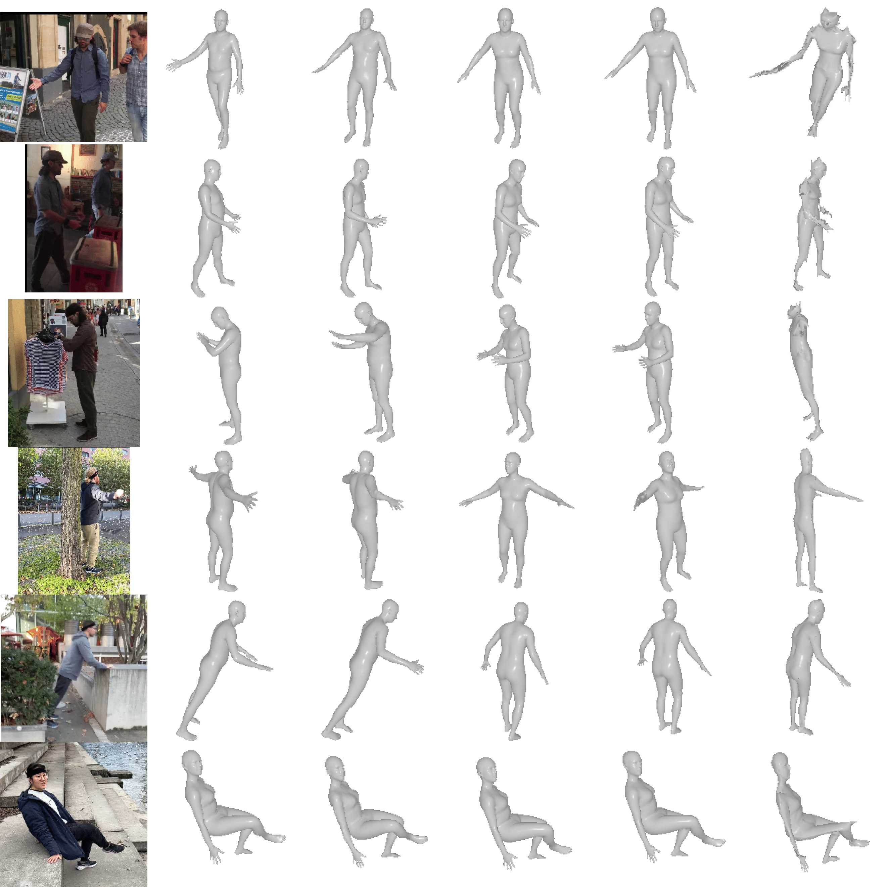
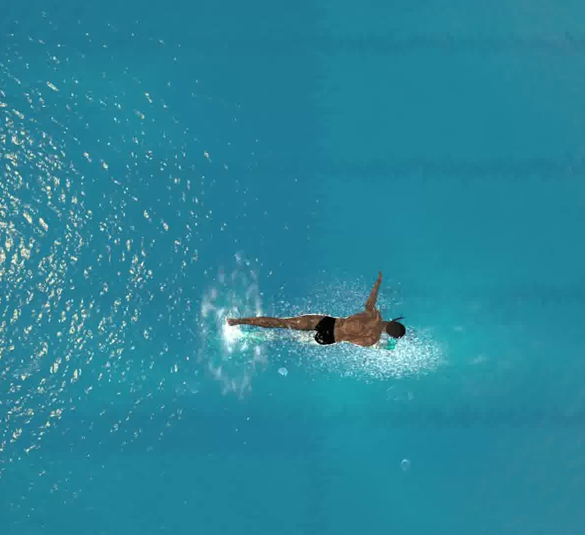

Guénolé FicheSince October 2021, I am a PhD candidate in the AIMAC team at CentraleSupélec, under the supervision of Renaud Séguier and Simon Leglaive. In 2023, I visited IRI with Francesc Moreno-Noguer and Antonio Agudo. My research focuses on Computer Vision and Deep Learning. In particular, I work on 3D human pose and shape estimation from images and videos, with a focus on weakly-supervised methods (generative models, self-supervised learning). Prior to that, I was a student at INSA Rouen Normandie, where I graduated in Mathematical and software engineering. |
{kind=link}
|  |
Guénolé Fiche, Simon Leglaive, Xavier Alameda-Pineda, Antonio Agudo, Francesc Moreno-Noguer ArXiv, 2023 project page / bibtex This work introduces a novel paradigm to address the human pose and shape estimation problem, involving a low-dimensional discrete latent representation of the human mesh and framing human pose and shape estimation as a classification task. |

|
Guénolé Fiche, Simon Leglaive, Xavier Alameda-Pineda, Renaud Séguier, ACM MIG, 2023 project page / bibtex We introduce a motion prior to capture the short-term dependencies of human motion and an unsupervised learned denoising method unifying regression- and optimization-based approaches in a single framework for real-time 3D human pose estimation. |
|  |
Guénolé Fiche, Vincent Sevestre, Camila Gonzalez-Barral, Simon Leglaive, Renaud Séguier, ACM MIG, 2023 project page / bibtex We introduce SwimXYZ, a synthetic dataset of swimming motions and videos. SwimXYZ contains 3.4 million frames annotated with ground truth 2D and 3D joints, as well as 240 sequences of swimming motions in the SMPL parameters format. |
|
Website source code borrowed from Jon Barron's public academic website. |